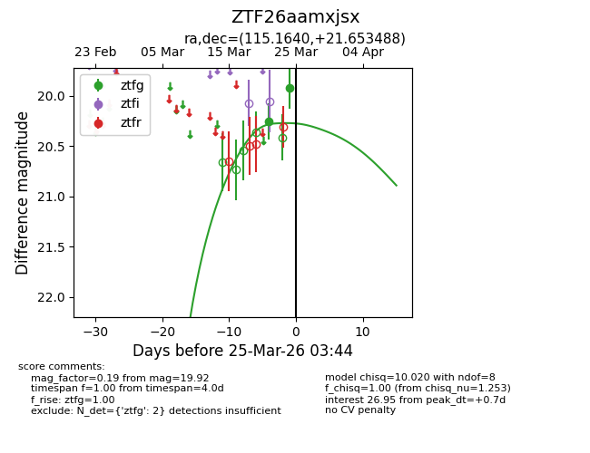
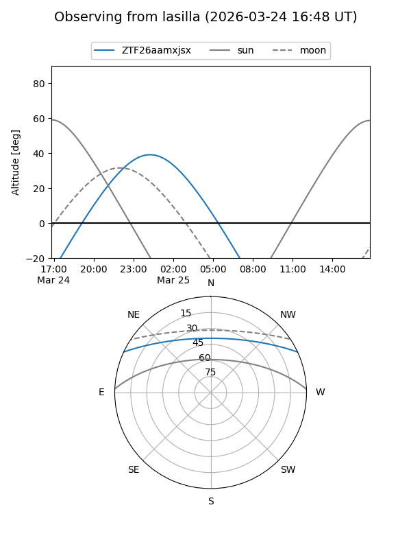
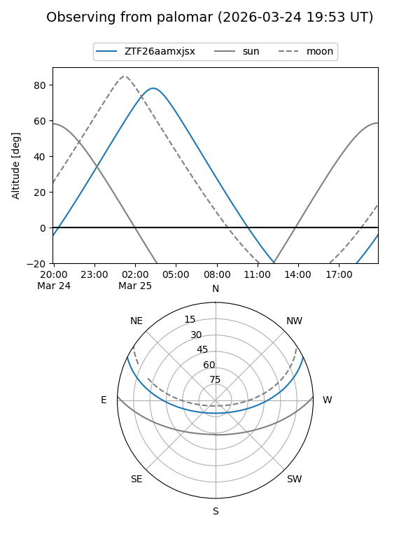
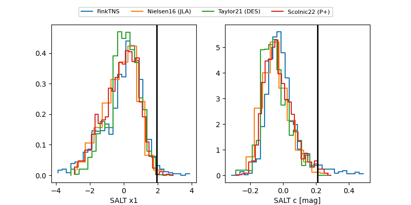

ZTF26aamxjsx
Target ZTF26aamxjsx at 2026-03-25 03:46
Aliases and brokers:
FINK: link
Lasair: link
ALeRCE: link
alt names
ZTF26aamxjsx (ztf,fink_ztf)
Coordinates:
equatorial (ra, dec) = 115.1640,+21.65349
equatorial (HMS+DMS) = 07:40:39.36,+21:39:12.56
galactic (l, b) = (198.2407,+20.15331)
Flags:
Photometry:
last ztfg=19.92
2 ztfg detections
Lightcurve

Visibility


Additional plots
